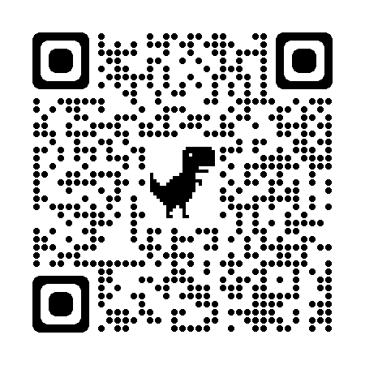

About Us
Who we are / Wie we zijn
\/
Our Story
ENGLISH: This organization was set up in November 2021, when we regretted a lack of activities in our community.
So we got a great idea: we decided to create some additional activities ourselves! From the
community, for the community. Since then, our team of BSN students has been working relentlessly
to make this
event possible, and we hope, in spite of Covid-19 restrictions, that it will take place.
NEDERLANDS: Deze
organisatie is opgericht in november 2021, toen we een gebrek aan activiteiten in onze gemeenschap
betreurden.
Dus we kregen een geweldig idee: we besloten om zelf wat extra activiteiten te creëren! Van de
community, for the community. Sindsdien werkt ons team van BSN-studenten onvermoeibaar om dit mogelijk
te maken
evenement mogelijk is, en we hopen, ondanks Covid-19-beperkingen, dat het zal plaatsvinden.
Share us
Here is our official QR-Code, offered by Google.
